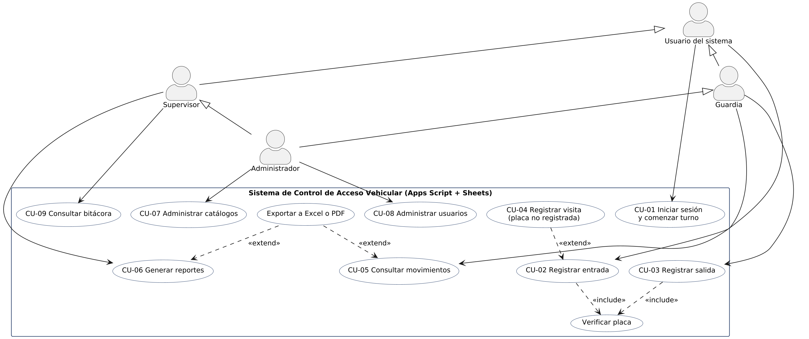
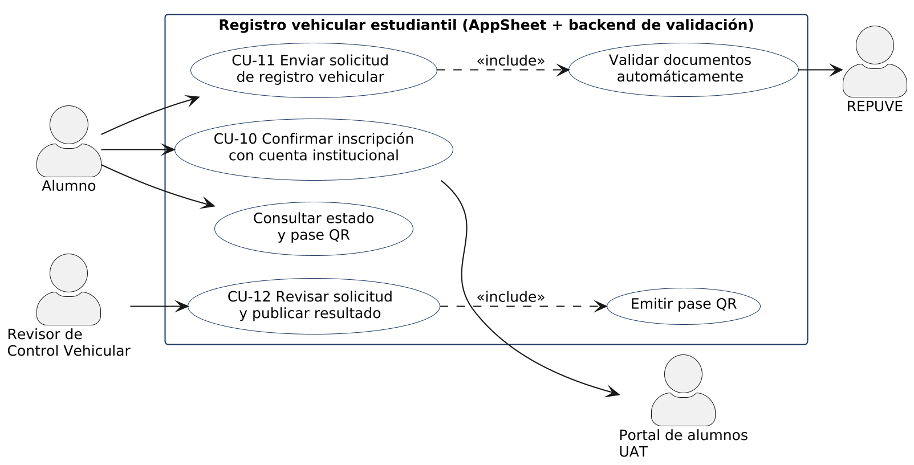
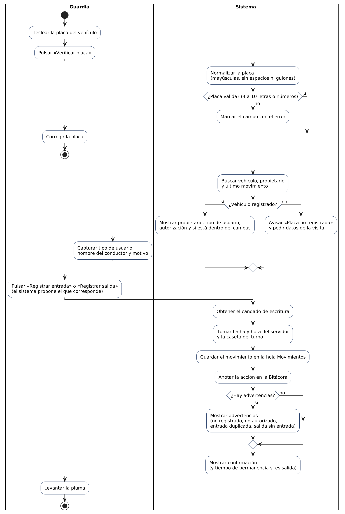
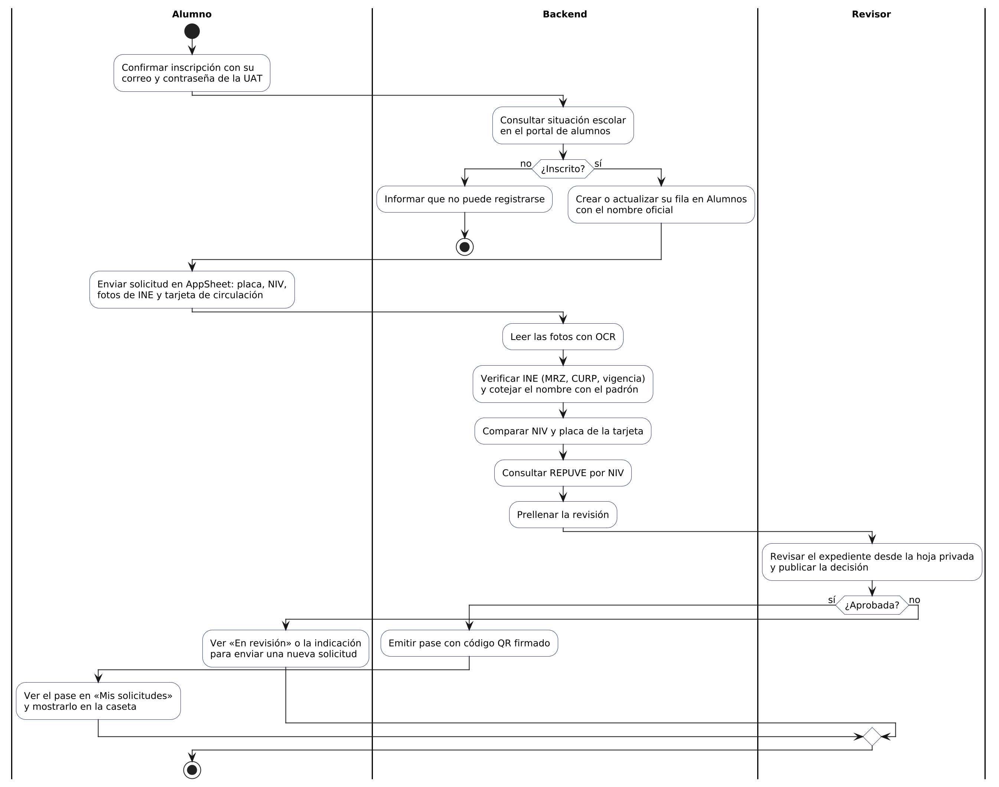
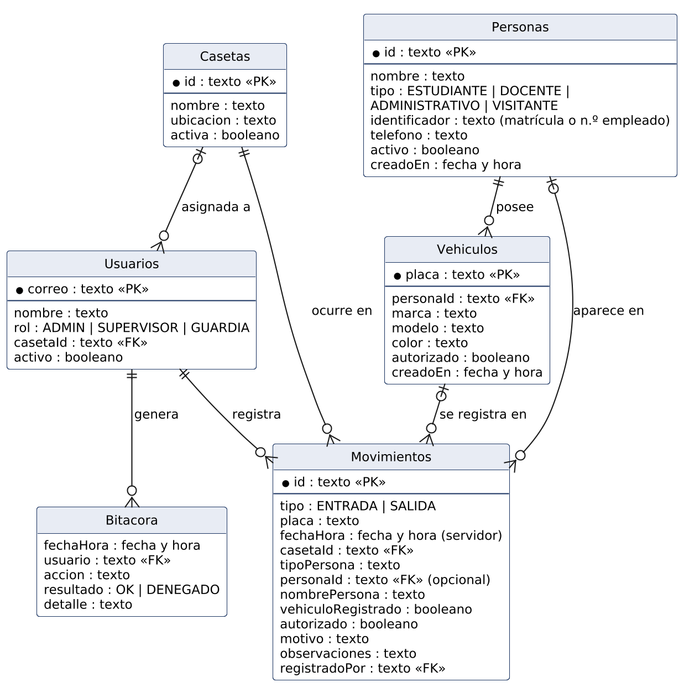
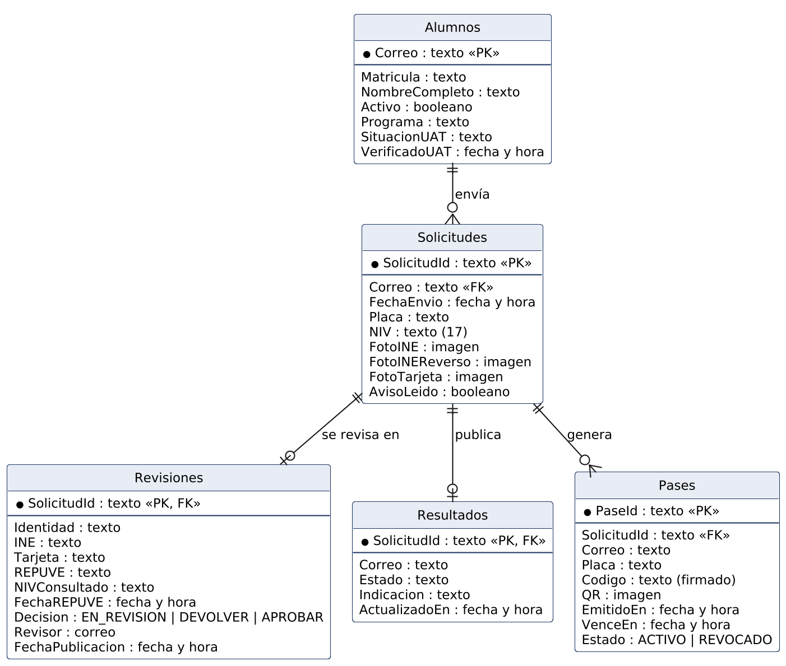
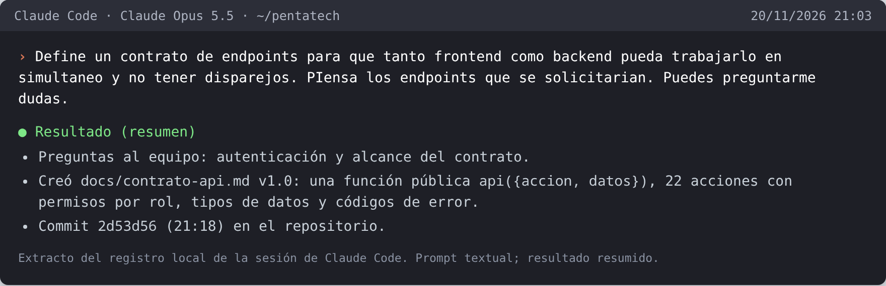

Especificación de Requisitos de Software · Control de Acceso Vehicular UAT CUTM Sur
UNIVERSIDAD AUTÓNOMA DE TAMAULIPAS
Facultad de Ingeniería Tampico · Centro Universitario Sur
Ingeniería en Sistemas Computacionales
Sistema de Control de Acceso Vehicular para la UAT CUTM Sur
Solución basada en Google Apps Script y Google Sheets
Especificación de Requisitos de Software
Evento
Concurso Hackatón · Facultad de Ingeniería Tampico
Equipo
Juan José Santiago Cruz Jared Said Constantino Lemus Juan Carlos Guzmán Antonio Jocelyin Mateo Saldierna Roberto Campillo Martínez
Versión
1.0
Tampico, Tamaulipas · 21 de noviembre de 2026
Control del documento
Datos del documento
Título
Especificación de Requisitos de Software (ERS) del Sistema de Control de Acceso Vehicular para la UAT CUTM Sur
Versión
1.0
Fecha
21 de noviembre de 2026
Estado
Versión para entrega
Normas de referencia
ISO/IEC/IEEE 29148, IEEE 830, ISO/IEC 25010
Documentos relacionados
Evidencias de levantamiento de requisitos · Manual de usuario · Contrato de API v1.1 (docs/contrato-api.md del repositorio)
Historial de versiones
Versión
Fecha
Cambios
0.1
20/11/2026
Borrador: introducción, entrevistas, situación actual, requisitos funcionales y no funcionales.
1.0
21/11/2026
Revisión contra el sistema construido. Se alinean los requisitos con el contrato de API y la interfaz, se separan los requisitos de versiones futuras, se agregan descripción general, casos de uso, diagramas, trazabilidad y el apartado de uso de inteligencia artificial. Las entrevistas pasan al documento de evidencias y los hechos que se citan de ellas se cotejan con las notas de campo.
Índice
1. Introducción
1.1 Propósito
Este documento especifica los requisitos del Sistema de Control de Acceso Vehicular para la Universidad Autónoma de Tamaulipas, Centro Universitario Tampico-Madero Sur (UAT CUTM Sur). Describe qué debe hacer el sistema, con qué atributos de calidad y bajo qué restricciones, de modo que sirva como base común para el diseño, la construcción, la prueba y la aceptación del producto.
Está dirigido al equipo de desarrollo, a los responsables administrativos del proceso de acceso vehicular, al personal de seguridad y de las casetas, y al jurado del concurso.
1.2 Alcance
El sistema digitaliza el registro de entradas y salidas de vehículos en las tres casetas de acceso del campus, que hoy se hace en papel y con verificaciones por radio. Es una aplicación web publicada con Google Apps Script que usa Google Sheets como base de datos y se usa desde el celular (en la caseta) y desde la computadora (en la administración).
Alcance de la versión 1.0 por módulo
Módulo
Funciones
Operación en caseta
Verificar una placa, registrar entradas y salidas con fecha, hora y caseta automáticas, registrar visitas de vehículos no registrados y avisar al guardia de situaciones irregulares sin detener el paso.
Catálogos
Vehículos autorizados, personas (estudiantes, docentes, administrativos y visitantes) y casetas.
Consultas
Historial de movimientos por placa, rango de fechas, caseta y tipo de usuario.
Reportes
Entradas y salidas por periodo, vehículos más frecuentes, horarios de mayor afluencia, tablero del día y exportación a Excel y PDF.
Seguridad y administración
Acceso con cuenta de Google, usuarios del sistema con tres roles, permisos verificados en el servidor y bitácora de actividades.
Registro vehicular estudiantil (complementario)
El alumno confirma su inscripción, solicita el registro de su vehículo con fotos de su INE y su tarjeta de circulación, el sistema prevalida los documentos y el personal de Control Vehicular aprueba y emite un pase con código QR.
Quedan fuera de la versión 1.0 los requisitos de la sección 3.7, entre ellos la regla de un tarjetón por persona, la importación de los datos del programa administrativo actual, la operación sin conexión y la lectura del pase QR desde la app de caseta.
1.3 Definiciones, acrónimos y abreviaturas
Definiciones
Término
Definición
Caseta
Punto de control de entrada y salida de vehículos del campus. Hay tres.
Movimiento
Registro de una entrada o de una salida de un vehículo por una caseta, con fecha y hora del servidor.
Tipo de usuario (tipo de persona)
Clasificación de quien conduce o es dueño del vehículo: Estudiante, Docente, Administrativo o Visitante. «Empleado» comprende Docente y Administrativo.
Usuario del sistema
Persona que opera el sistema con su cuenta de Google. No debe confundirse con el tipo de usuario.
Rol
Conjunto de permisos de un usuario del sistema: Administrador, Supervisor o Guardia.
Turno
Periodo en que un guardia opera la app desde una caseta. Al comenzarlo se fija la caseta de sus registros.
Placa normalizada
Placa en mayúsculas sin espacios, guiones ni puntos, de 4 a 10 caracteres (por ejemplo, «xyz-123-a» se guarda como «XYZ123A»).
Vehículo autorizado
Vehículo del catálogo marcado como autorizado para ingresar.
Advertencia
Aviso al guardia que no impide guardar el movimiento: vehículo no registrado, vehículo no autorizado, entrada duplicada o salida sin entrada.
Bitácora
Registro cronológico de accesos, cambios, exportaciones e intentos rechazados en el sistema.
Tarjetón
Distintivo físico de acceso vehicular que entrega la administración; el diseño vigente es blanco con un correcaminos naranja. Según la entrevista E2 se permite uno por persona.
Pase QR
Pase digital de acceso con código QR firmado que se emite al aprobar una solicitud de registro vehicular estudiantil.
Padrón
Lista de alumnos que confirmaron su inscripción con su cuenta institucional (hoja Alumnos).
Acrónimos y abreviaturas
Sigla
Significado
UAT · CUTM Sur
Universidad Autónoma de Tamaulipas · Centro Universitario Tampico-Madero Sur
ERS · SRS
Especificación de Requisitos de Software (Software Requirements Specification)
RF · RNF · CU
Requisito funcional · Requisito no funcional · Caso de uso
API
Interfaz de programación entre la interfaz web y el servidor
INE
Credencial para votar del Instituto Nacional Electoral
NIV
Número de identificación vehicular (17 caracteres)
REPUVE
Registro Público Vehicular
OCR · MRZ · CURP
Reconocimiento óptico de caracteres · Zona de lectura mecánica de la INE · Clave Única de Registro de Población
HK · E1 · E2 · EQ
Origen de un requisito: documento del Hackatón · entrevista al personal de seguridad de las casetas · entrevista a responsables administrativos · propuesta del equipo
1.4 Referencias
Facultad de Ingeniería Tampico, UAT. Proyecto Hackatón: Sistema de Control de Acceso Vehicular para la UAT CUTM Sur mediante Google Apps Script y Google Sheets. Noviembre de 2026.
ISO/IEC/IEEE 29148:2018. Systems and software engineering — Life cycle processes — Requirements engineering.
IEEE Std 830-1998. IEEE Recommended Practice for Software Requirements Specifications.
ISO/IEC 25010:2023. Systems and software engineering — Systems and software Quality Requirements and Evaluation (SQuaRE) — Product quality model.
Equipo del proyecto. Evidencias de levantamiento de requisitos, versión 1.0. Noviembre de 2026.
Equipo del proyecto. Contrato de API v1.1 (docs/contrato-api.md) y documentación técnica del repositorio del proyecto.
1.5 Visión general del documento
La sección 2 describe el contexto, la arquitectura, los usuarios y las restricciones. Las secciones 3 y 4 enumeran los requisitos funcionales y no funcionales. La sección 5 detalla los casos de uso y la sección 6 reúne los diagramas de casos de uso, de actividades y el modelo de datos. La sección 7 relaciona cada requisito con su origen, sus casos de uso y la acción del sistema que lo cumple. El Anexo A declara el uso de inteligencia artificial en el proyecto.
Los identificadores RF-001 a RF-019 se conservan del contrato de API, que los cita, para mantener la trazabilidad entre este documento y el código. Por eso la numeración no sigue el orden de los módulos.
2. Descripción general
2.1 Contexto y problemática
De acuerdo con las entrevistas al personal de seguridad que opera las casetas (E1) y a los responsables administrativos (E2), documentadas en el entregable de evidencias, el control de acceso vehicular actual es manual:
El guardia identifica el tipo de usuario por la credencial o por apreciación visual, pregunta el asunto y, cuando hay duda, lo confirma por radio con la central.
Al conductor de un vehículo externo se le retiene una credencial o identificación, que se le devuelve al salir.
En la hoja física anota empresa, asunto y destino de las visitas, y solo cuando el tiempo lo permite: en las horas pico de la tarde no se anotan todos los vehículos.
El alta de vehículos es presencial con el responsable administrativo, que captura los datos en un programa del área. Para el tarjetón se entregan copias de la tarjeta de circulación, la credencial de elector o un comprobante de domicilio, y la credencial UAT o, en su lugar, el comprobante de pago (alumnos) o el recibo de nómina (empleados). Se permite un tarjetón por persona.
Las casetas no tienen un sistema automatizado: el registro es en papel y la comunicación, por radio. La conectividad de las casetas no se ha confirmado.
En consecuencia, no hay consulta histórica, reportes ni estadísticas; la información está incompleta en los momentos de mayor movimiento; cada guardia aplica un criterio distinto, la caseta no puede validar un vehículo con los datos de la administración y no queda evidencia de quién autorizó un acceso ni por qué.
2.2 Perspectiva del producto
El producto es nuevo y está compuesto por un sistema principal y un módulo complementario.
Componentes del producto
Componente
Descripción
Interfaz web
Dos aplicaciones: la app de caseta, diseñada para celular, y el portal de administración, para computadora. Están construidas con React y TypeScript y se compilan a un solo archivo HTML cada una, que Apps Script sirve con HtmlService.
Servidor
Web App de Google Apps Script con una sola función pública, api({accion, datos}), que identifica al usuario, valida sus permisos, ejecuta la acción, registra la bitácora y responde siempre con un sobre {ok, datos | error}. Las acciones y sus reglas están definidas en el contrato de API v1.1.
Base de datos
Un archivo de Google Sheets con una hoja por entidad: Casetas, Usuarios, Personas, Vehiculos, Movimientos y Bitacora (sección 6.3).
Registro vehicular estudiantil (complementario)
App de AppSheet sobre su propia hoja de Google Sheets, un sitio de registro de alumnos, un backend en Go y un analizador de documentos en Python (OCR y consulta a REPUVE), publicados en un servidor del equipo. Emite el pase QR del alumno.
El sistema principal cumple la restricción de las bases: Google Apps Script, Google Sheets e interfaz web. El módulo complementario automatiza el trámite de alta de vehículos de alumnos, que según la entrevista E2 hoy es presencial. Su integración con la caseta (leer el pase QR) está planeada para una versión futura (RF-039).
2.3 Funciones del producto
En la caseta: comenzar y terminar turno, verificar una placa, registrar entradas, salidas y visitas, agregar una nota y ver los registros del día en esa caseta.
En el portal: tablero del día, consultas con filtros, reportes con gráficas, exportación a Excel y PDF, catálogos de vehículos, personas y casetas, usuarios del sistema y bitácora.
Para alumnos: confirmar la inscripción, solicitar el registro del vehículo, consultar el estado de la solicitud y mostrar el pase QR.
2.4 Características de los usuarios
Usuarios del sistema y roles
Rol
Quién lo usa
Puede
Guardia
Personal de caseta, desde un celular, muchas veces compartido.
Registrar entradas y salidas, verificar placas y consultar movimientos.
Supervisor
Personal de seguridad o coordinación.
Solo lectura: consultas, reportes, catálogos y bitácora.
Administrador
Responsable administrativo del proceso.
Todo, incluidos los catálogos y los usuarios del sistema.
Alumno
Estudiante que solicita el registro de su vehículo (módulo complementario).
Confirmar su inscripción, enviar solicitudes y ver su resultado y su pase.
Revisor
Personal de Control Vehicular (módulo complementario).
Revisar expedientes y publicar el resultado desde la hoja privada.
Los guardias no requieren conocimientos técnicos. La operación debe resolverse con la placa y pocos toques, porque en las horas pico hay filas (E1).
2.5 Restricciones
Plataforma obligatoria: Google Apps Script, Google Sheets e interfaz web (bases del Hackatón).
Las cuentas institucionales de la UAT son de Microsoft, por lo que el prototipo usa cuentas de Google. Al publicarse desde una cuenta personal, Google solo entrega al servidor el correo del propietario; las demás cuentas se identifican con una clave anónima que Google asigna a cada cuenta.
En el prototipo, una cuenta nueva se da de alta automáticamente como Administrador para facilitar la evaluación; la propiedad del script ROL_ALTA_AUTOMATICA cambia ese rol o desactiva el alta automática.
Límites de Apps Script: hasta 6 minutos por ejecución y entre 0.5 y 2 segundos por llamada desde la interfaz.
El sistema requiere conexión a internet en las casetas; la conectividad actual no se confirmó en la entrevista E1.
Módulo complementario: AppSheet gratuito admite hasta 10 usuarios de prueba. El portal de REPUVE está protegido con reCAPTCHA, por lo que la consulta automática puede terminar como «no disponible» y pasar a revisión humana.
Tratamiento de datos personales conforme a la Ley General de Protección de Datos Personales en Posesión de Sujetos Obligados, con aviso de privacidad institucional.
2.6 Suposiciones y dependencias
Las casetas contarán con un celular con datos móviles o con acceso a la red del campus antes de implantar el sistema.
Para la implantación definitiva, la institución publicaría el sistema con una cuenta de Google Workspace propia o integraría su servicio de identidad institucional.
Un vehículo no autorizado se registra con advertencia y la decisión de dejarlo pasar sigue el protocolo de seguridad vigente. Si la institución decide bloquearlo, el cambio está previsto en el contrato de API.
El módulo complementario depende del portal de alumnos de la UAT, de REPUVE y de un servidor externo a Google. Pedir la contraseña institucional fuera de un sitio de la UAT requiere autorización de la universidad.
3. Requisitos funcionales
Cada requisito indica su prioridad (Alta: indispensable para la operación; Media: aporta valor y puede posponerse) y su origen (HK, E1, E2 o EQ, ver la tabla de acrónimos). La sección 7 relaciona cada requisito con sus casos de uso y con la acción del servidor que lo cumple.
3.1 Operación en caseta
Requisitos de operación en caseta
ID
Requisito
Descripción
Prioridad
Origen
RF-001
Registrar entrada vehicular
Registrar la entrada de un vehículo con placa, caseta, tipo de usuario, fecha y hora, y el usuario que la registró.
Alta
HK
RF-002
Registrar salida vehicular
Registrar la salida de un vehículo. Si tiene una entrada abierta, mostrar el tiempo de permanencia y conservar los datos de la visita.
Alta
HK
RF-020
Registrar visita
Si la placa no está en el catálogo, pedir el tipo de usuario (Visitante por omisión), el nombre del conductor y el motivo de la visita.
Alta
HK, E1
RF-021
Advertir sin bloquear
Avisar al guardia cuando el vehículo no está registrado, no está autorizado, ya tenía una entrada abierta o sale sin entrada registrada. El movimiento se guarda de todos modos.
Media
EQ, E1
RF-022
Fecha y hora automáticas
Asignar a cada movimiento la fecha y hora del servidor en la zona del campus. El operador no puede capturarlas ni editarlas.
Alta
HK
RF-023
Identificar la caseta
Asignar a cada movimiento la caseta del turno: la asignada al guardia o la que elige al comenzar el turno. Un guardia con caseta asignada no puede registrar en otra.
Alta
HK
RF-024
Agregar una nota
Permitir una observación de hasta 500 caracteres en el registro, por ejemplo para dejar constancia de una verificación por radio con la central.
Media
E1
RF-025
Vehículos dentro del campus
Mostrar los vehículos cuya última operación es una entrada y su tiempo de permanencia.
Media
EQ
3.2 Catálogos
Requisitos de catálogos
ID
Requisito
Descripción
Prioridad
Origen
RF-008
Administrar vehículos
Dar de alta, editar y desautorizar vehículos con placa (única), propietario, marca, modelo, color y estado de autorización. La placa no se modifica: para otro vehículo se da de alta uno nuevo.
Alta
HK
RF-009
Administrar personas
Dar de alta, editar y desactivar estudiantes, docentes, administrativos y visitantes con nombre, tipo, matrícula o número de empleado (obligatorio y único salvo para visitantes) y teléfono.
Alta
HK
RF-010
Administrar casetas
Dar de alta, editar y desactivar casetas con nombre, ubicación y estado. El sistema se instala con las tres casetas del campus.
Alta
HK
Ningún registro se borra: los catálogos se desactivan para conservar el historial de movimientos.
3.3 Consultas
Requisitos de consultas
ID
Requisito
Descripción
Prioridad
Origen
RF-003
Consultar historial
Listar los movimientos del más reciente al más antiguo, con paginación y filtros combinables (placa, fechas, caseta, tipo de usuario y tipo de movimiento).
Alta
HK
RF-004
Consultar por placa
En el portal, filtrar por placa completa o parcial. En la caseta, al verificar una placa, mostrar propietario, tipo de usuario, matrícula o número de empleado, vehículo, autorización, si está dentro del campus y su último movimiento, y proponer el registro que corresponde.
Alta
HK, E1
RF-005
Consultar por rango de fechas
Filtrar los movimientos entre dos fechas, ambas incluidas.
Alta
HK
RF-006
Consultar por acceso
Filtrar los movimientos por caseta.
Alta
HK
RF-007
Consultar por tipo de usuario
Filtrar por Estudiante, Docente, Administrativo o Visitante.
Alta
HK
3.4 Reportes
Requisitos de reportes
ID
Requisito
Descripción
Prioridad
Origen
RF-011
Entradas y salidas por periodo
Totalizar entradas y salidas por día, semana o mes, con desglose por caseta y por tipo de usuario, para un rango de hasta 366 días.
Alta
HK
RF-012
Vehículos más frecuentes
Listar las placas con más entradas en el periodo (10 por omisión, hasta 100), incluidas las no registradas.
Alta
HK
RF-013
Horarios de mayor afluencia
Mostrar los movimientos por hora del día y por día de la semana, un mapa de calor día por hora y el horario pico, con filtro por caseta.
Alta
HK, E1
RF-014
Exportar a Excel y PDF
Descargar consultas y reportes en Excel y en PDF (hasta 5000 filas, con aviso si se recortó). Cada exportación queda en la bitácora.
Alta
HK
RF-026
Tablero del día
Mostrar entradas, salidas, vehículos dentro, visitas, afluencia por hora, totales por caseta, últimos movimientos y vehículos con más tiempo dentro.
Media
EQ
3.5 Seguridad y administración
Requisitos de seguridad y administración
ID
Requisito
Descripción
Prioridad
Origen
RF-015
Iniciar y cerrar sesión
Entrar con una cuenta de Google, sin contraseñas propias del sistema, y cerrar la sesión desde la app («Terminar turno» o «Cerrar sesión»).
Alta
HK
RF-016
Administrar usuarios del sistema
Dar de alta, editar y desactivar usuarios con correo, nombre, rol y caseta asignada. Impedir que el sistema quede sin un administrador activo y que un usuario se desactive a sí mismo.
Alta
HK
RF-017
Restringir funciones por rol
Permitir a cada rol solo las acciones que le corresponden, verificándolo en el servidor en cada operación, y mostrar en la interfaz solo esas opciones.
Alta
HK
RF-018
Registrar la bitácora
Guardar fecha y hora, usuario, acción, resultado y detalle de cada acceso, cambio, exportación e intento rechazado.
Alta
HK
RF-019
Consultar la bitácora
Consultar la bitácora con filtros por fechas, usuario y actividad.
Alta
HK
3.6 Registro vehicular estudiantil (módulo complementario)
Requisitos del registro vehicular estudiantil
ID
Requisito
Descripción
Prioridad
Origen
RF-027
Confirmar inscripción
El alumno inicia sesión con su correo o matrícula y contraseña de la UAT. El sistema consulta su situación en el portal de alumnos y, si está inscrito, lo da de alta en el padrón con su nombre oficial. Si la UAT lo reporta de baja, lo desactiva.
Media
EQ
RF-028
Solicitar registro vehicular
El alumno del padrón envía placa, NIV de 17 caracteres, foto del frente de la INE, foto del reverso (opcional), foto de la tarjeta de circulación y la aceptación del aviso de privacidad.
Media
E2, EQ
RF-029
Prevalidar documentos
Leer las fotos con OCR; verificar en la INE la MRZ con sus dígitos de control, la CURP, la vigencia y el nombre contra el padrón; comparar el NIV y la placa de la tarjeta con la solicitud y consultar REPUVE por NIV. El resultado prellena la revisión.
Media
EQ
RF-030
Revisar y publicar resultado
El revisor abre la revisión desde la hoja privada y publica «En revisión», «Devolver» o «Aprobar». Aprobar exige alumno activo, identidad, INE y tarjeta validadas, y REPUVE sin reporte para el mismo NIV. No se aprueba dos veces la misma placa o NIV.
Media
EQ
RF-031
Consultar el estado
El alumno ve el estado de cada solicitud (pendiente, en revisión, requiere atención o aprobada) y la indicación del revisor.
Media
EQ
RF-032
Emitir y revocar el pase QR
Al aprobar, emitir un pase con código QR firmado que contiene el identificador del pase, la placa y la fecha, sin datos personales, con vigencia configurable. El pase se revoca desde la hoja.
Media
EQ
3.7 Requisitos identificados para versiones futuras
Estos requisitos surgieron del levantamiento y se registran para no perderlos, pero no forman parte de la versión 1.0. La columna «En la versión 1.0» indica cómo se cubre hoy la necesidad, cuando aplica.
Requisitos para versiones futuras
ID
Requisito
Descripción
En la versión 1.0
Origen
RF-033
Un tarjetón por persona
Impedir que una persona tenga más de un vehículo activo asociado a su tarjetón.
Una persona puede tener varios vehículos.
E2
RF-034
Cambiar el vehículo del tarjetón
Reemplazar el vehículo asociado a un tarjetón conservando el historial del anterior.
Se desautoriza el vehículo anterior y se da de alta el nuevo; el historial se conserva.
E2
RF-035
Importar datos administrativos
Cargar personas y vehículos desde el programa en que el área administrativa registra hoy los datos.
Alta individual desde el portal.
E2
RF-036
Acceso de emergencia
Registro rápido de ambulancias o emergencias con datos mínimos, completable después.
Se registra como visita con una nota.
E1
RF-037
Verificación con la central
Campo específico para indicar si el acceso se verificó por radio con la central.
Se deja constancia con la nota (RF-024).
E1
RF-038
Datos ampliados de visita
Capturar por separado empresa, destino y la identificación que el visitante deja en la caseta, y marcar su devolución a la salida.
Se captura nombre y motivo; la identificación puede anotarse en la nota.
E1, E2
RF-039
Leer el pase QR en la caseta
Escanear el pase QR del alumno y verificar firma, vigencia y revocación antes de registrar.
El backend ya ofrece la verificación; falta integrarla al contrato y a la app.
EQ
RF-040
Operación sin conexión
Capturar registros sin conexión y enviarlos después marcados como diferidos, con la hora real del suceso.
Sin conexión se usa el formato en papel.
EQ
4. Requisitos no funcionales
Los requisitos no funcionales se agrupan según las características de calidad de ISO/IEC 25010:2023. Los valores de tiempo son metas propuestas por el equipo a partir de las entrevistas y deben confirmarse en una prueba con el personal de las casetas.
Seguridad (ISO/IEC 25010: seguridad)
ID
Requisito
Criterio de aceptación
RNF-001
Solo entran cuentas autenticadas por Google. El servidor identifica la cuenta (por su correo o por la clave anónima de Google); la interfaz nunca envía la identidad.
Sin sesión de Google la aplicación no abre; con el alta automática desactivada, una cuenta no registrada ve la pantalla «Sin acceso».
RNF-002
Los permisos se verifican en el servidor en cada llamada; ocultar opciones en la interfaz no basta.
Una acción no permitida responde «Permiso denegado» y queda en la bitácora.
RNF-003
La hoja de cálculo no se comparte con guardias ni supervisores; solo acceden por la aplicación.
Un guardia no puede abrir la hoja directamente.
RNF-004
La bitácora no puede editarse ni borrarse desde el sistema.
Ningún rol tiene una opción para modificarla.
RNF-005
No se borra información: los catálogos se desactivan.
Desactivar un vehículo conserva todos sus movimientos.
RNF-006
En el registro estudiantil no se guardan CURP, CIC, texto del OCR ni fotos en tablas o registros técnicos; la contraseña de la UAT no se almacena, y hay límites de intentos (10 por IP y 5 contraseñas rechazadas por cuenta cada 15 minutos).
Revisión de las tablas y de los registros del servidor tras una solicitud de prueba.
Rendimiento (ISO/IEC 25010: eficiencia de desempeño)
ID
Requisito
Criterio de aceptación
RNF-007
Registrar la entrada de un vehículo registrado toma 10 segundos o menos, desde teclear la placa hasta la confirmación.
Medido en prueba con un guardia.
RNF-008
Una consulta por placa responde en 3 segundos o menos.
Medido con al menos 1000 movimientos.
RNF-009
Un reporte mensual se genera en 20 segundos o menos.
Medido con un mes de datos.
RNF-010
Las tres casetas pueden registrar al mismo tiempo sin perder registros: las escrituras usan un candado con espera de unos 10 segundos.
Registros simultáneos desde tres dispositivos quedan completos; si no se obtiene el candado, el sistema avisa «Ocupado» para reintentar.
Disponibilidad (ISO/IEC 25010: fiabilidad)
ID
Requisito
Criterio de aceptación
RNF-011
El sistema está disponible durante el horario de operación del campus, sujeto a la disponibilidad de los servicios de Google.
Sin caídas atribuibles al sistema durante la prueba.
RNF-012
Ante una falla de red, la interfaz informa con un mensaje claro y permite reintentar.
Al cortar la conexión, aparece el aviso de red y el formulario conserva lo capturado.
RNF-013
Las casetas cuentan con conexión (datos móviles o red del campus) antes de implantar el sistema. Mientras no la haya, el registro se hace en el formato en papel actual.
Conexión verificada en las tres casetas.
Usabilidad (ISO/IEC 25010: capacidad de interacción)
ID
Requisito
Criterio de aceptación
RNF-014
La app de caseta está diseñada para celular, con botones de al menos 44 píxeles de alto; el portal está diseñado para computadora.
Uso completo en una pantalla de 360 píxeles de ancho.
RNF-015
Registrar un vehículo registrado requiere tres acciones: teclear la placa, verificarla y registrar.
Prueba de recorrido.
RNF-016
Toda la interfaz y los mensajes de error están en español claro; los errores se muestran junto al campo que los causa.
Revisión de todas las pantallas.
RNF-017
Un guardia nuevo aprende a registrar entradas y salidas en 30 minutos o menos.
Prueba con un guardia sin experiencia previa.
Mantenibilidad (ISO/IEC 25010: mantenibilidad)
ID
Requisito
Criterio de aceptación
RNF-018
La interfaz y el servidor se comunican mediante un contrato de API versionado, con una sola función pública, que es la fuente de verdad de acciones, datos, errores y permisos.
Cada acción usada por la interfaz está en el contrato.
RNF-019
El código está organizado por módulos, con tipos de TypeScript en la interfaz, en un repositorio con control de versiones; el backend complementario tiene pruebas automatizadas.
Revisión del repositorio; las pruebas pasan.
RNF-020
Las casetas se agregan o modifican desde el portal sin cambiar el código. Los tipos de usuario y los roles son fijos y cambiarlos requiere modificar el contrato.
Agregar una caseta sin editar código.
RNF-021
El sistema se entrega con manual de usuario.
Manual entregado con el sistema.
5. Casos de uso
Los diagramas de casos de uso están en la sección 6.1. Los mensajes de error que se mencionan son los definidos en el contrato de API.
CU-01 Iniciar sesión y comenzar turno
Actor
Guardia (también Supervisor y Administrador para iniciar sesión)
Descripción
El usuario entra con su cuenta de Google y, en la caseta, fija la caseta de su turno.
Precondiciones
El usuario está dado de alta y activo en el sistema. El dispositivo tiene conexión.
Flujo principal
El usuario abre la dirección de la app.
Google solicita la cuenta si no hay una sesión abierta.
El sistema identifica al usuario por su correo y carga su rol, sus permisos y las casetas activas.
Si el guardia tiene caseta asignada, el sistema la muestra; si no, el guardia elige una.
El guardia pulsa «Comenzar turno» y el sistema abre la pantalla de trabajo.
Flujos alternos
3a. El correo no está registrado, el usuario está inactivo o el servidor no recibe el correo: el sistema muestra «Tu cuenta no tiene acceso» con el motivo y la opción de usar otra cuenta.
5a. Desde las opciones del turno, el guardia cambia de caseta o termina el turno; terminar cierra la sesión de Google en el dispositivo.
Postcondiciones
El acceso queda en la bitácora.
Requisitos
RF-015, RF-017, RF-018, RF-023
CU-02 Registrar entrada
Actor
Guardia (también Administrador)
Descripción
El guardia registra la entrada de un vehículo a partir de su placa.
Precondiciones
Turno iniciado en una caseta activa (CU-01).
Flujo principal
El guardia teclea la placa y pulsa «Verificar placa».
El sistema normaliza la placa y muestra propietario, tipo de usuario, vehículo, autorización, que está fuera del campus y su último movimiento.
El guardia pulsa «Registrar entrada».
El sistema guarda la entrada con la fecha y hora del servidor, la caseta del turno y el correo del guardia, y la anota en la bitácora.
El sistema muestra «Entrada registrada» con la hora; el guardia permite el paso y pulsa «Registrar otro vehículo».
Flujos alternos
2a. La placa no tiene entre 4 y 10 letras o números: el sistema marca el campo con el error.
2b. La placa no está registrada: continúa en CU-04.
2c. El vehículo no está autorizado: el sistema lo indica; el guardia aplica el protocolo de seguridad y, si registra, la entrada se guarda con advertencia.
3a. El guardia agrega una nota antes de registrar.
4a. El vehículo ya tenía una entrada abierta: se guarda con la advertencia «Entrada duplicada».
4b. Otra caseta está escribiendo y no se obtiene el candado: el sistema avisa «Ocupado» y el guardia reintenta.
4c. No hay conexión: el sistema muestra el aviso de red; el guardia reintenta o usa el formato en papel.
Postcondiciones
Un movimiento de tipo ENTRADA en la hoja Movimientos y su registro en la bitácora.
Requisitos
RF-001, RF-004, RF-021, RF-022, RF-023, RF-024
CU-03 Registrar salida
Actor
Guardia (también Administrador)
Descripción
El guardia registra la salida de un vehículo.
Precondiciones
Turno iniciado en una caseta activa.
Flujo principal
El guardia teclea la placa y pulsa «Verificar placa».
El sistema muestra que el vehículo está dentro del campus, desde cuándo y por qué caseta entró, y propone «Registrar salida».
El guardia pulsa «Registrar salida».
El sistema guarda la salida con la fecha, la hora y la caseta automáticas y conserva los datos de la visita de la entrada.
El sistema muestra «Salida registrada» con el tiempo que estuvo dentro.
Flujos alternos
2a. No hay una entrada abierta: el sistema propone la entrada; si el guardia registra la salida, se guarda con la advertencia «Salida sin entrada».
4a. Ocupado o sin conexión: como en CU-02.
Postcondiciones
Un movimiento de tipo SALIDA en Movimientos y su registro en la bitácora.
Requisitos
RF-002, RF-004, RF-021, RF-022, RF-023
CU-04 Registrar visita (placa no registrada)
Actor
Guardia
Descripción
Extiende CU-02 cuando la placa no está en el catálogo, por ejemplo un visitante o un proveedor.
Precondiciones
La verificación indicó «Placa no registrada».
Flujo principal
El sistema muestra el formulario de la visita con «Visitante» seleccionado.
El guardia confirma o cambia el tipo de usuario y captura el nombre del conductor y el motivo de la visita.
El guardia pulsa «Registrar entrada».
El sistema guarda la entrada con la advertencia «La placa no está en el catálogo de vehículos».
Flujos alternos
2a. Falta el tipo de usuario o un dato no es válido: el sistema marca el campo.
Al salir, el sistema toma los datos de la visita de la entrada abierta, sin volver a capturarlos.
Postcondiciones
Entrada registrada como vehículo no registrado.
Requisitos
RF-001, RF-020, RF-021
CU-05 Consultar movimientos
Actor
Guardia, Supervisor, Administrador
Descripción
El usuario busca movimientos con filtros y, opcionalmente, los exporta.
Precondiciones
Sesión iniciada en el portal.
Flujo principal
El usuario abre «Consultas».
Captura uno o varios filtros: placa, desde, hasta, caseta, tipo de usuario y movimiento.
Pulsa «Buscar movimientos».
El sistema muestra el total y la lista paginada, del más reciente al más antiguo.
Flujos alternos
4a. No hay coincidencias: el sistema lo indica y sugiere otros filtros.
Extensión: el usuario pulsa «Exportar a Excel» o «Exportar a PDF»; el archivo se descarga y la exportación queda en la bitácora. Si hay más de 5000 filas, el sistema avisa que el archivo está recortado.
Requisitos
RF-003 a RF-007, RF-014
CU-06 Generar reportes
Actor
Supervisor, Administrador
Descripción
El usuario obtiene reportes estadísticos de un periodo.
Precondiciones
Sesión iniciada en el portal con permiso de reportes.
Flujo principal
El usuario abre «Reportes» y elige desde, hasta y, si quiere, una caseta.
El sistema muestra entradas y salidas por periodo (agrupables por día, semana o mes), totales por caseta y por tipo de usuario, vehículos más frecuentes y el mapa de horarios de mayor afluencia.
El usuario exporta el reporte a Excel o PDF.
Flujos alternos
1a. El rango supera 366 días o la fecha final es anterior a la inicial: el sistema marca el error.
2a. No hay movimientos en el periodo: las gráficas aparecen en cero y no hay horario pico.
Requisitos
RF-011 a RF-014, RF-026
CU-07 Administrar catálogos
Actor
Administrador
Descripción
Alta y edición de vehículos, personas y casetas.
Precondiciones
Sesión iniciada con rol Administrador.
Flujo principal
El administrador abre «Catálogos» y elige la pestaña Vehículos, Personas o Casetas.
Pulsa «Agregar» o «Editar» en un registro.
Captura los datos y guarda.
El sistema valida, guarda, actualiza la lista y anota el cambio en la bitácora.
Flujos alternos
4a. La placa o la matrícula ya existen: el sistema marca el campo como duplicado.
4b. La persona elegida para un vehículo no existe o está inactiva: error de validación.
2a. Para retirar un registro, el administrador lo desactiva o desautoriza; no se borra.
Requisitos
RF-008, RF-009, RF-010
CU-08 Administrar usuarios del sistema
Actor
Administrador
Descripción
Alta y edición de quién usa el sistema y con qué rol.
Precondiciones
Sesión iniciada con rol Administrador.
Flujo principal
El administrador abre «Administración» y pulsa «Agregar usuario».
Captura el correo de la cuenta de Google, nombre, rol y, para un guardia, la caseta fija o «Sin caseta fija».
Pulsa «Guardar usuario».
El sistema guarda el usuario y el cambio en la bitácora. Desde ese momento la persona puede entrar con su cuenta.
Flujos alternos
4a. El correo ya existe: el sistema marca el campo como duplicado.
2a. Al editar, el administrador cambia el rol o la caseta, o desactiva al usuario.
4b. El cambio dejaría el sistema sin administradores activos o el usuario intenta desactivarse a sí mismo: el sistema lo rechaza con un aviso.
Requisitos
RF-016, RF-017, RF-018
CU-09 Consultar bitácora
Actor
Supervisor, Administrador
Descripción
Revisión de quién hizo qué en el sistema.
Flujo principal
El usuario abre «Administración», sección «Bitácora de actividades».
Filtra por desde, hasta, usuario o actividad.
El sistema muestra las entradas de la más reciente a la más antigua, con su resultado (correcto o rechazado).
Flujos alternos
3a. Sin coincidencias: el sistema lo indica.
Requisitos
RF-018, RF-019
CU-10 Confirmar inscripción con cuenta institucional
Actor
Alumno; sistema externo: portal de alumnos de la UAT
Flujo principal
El alumno abre el sitio de registro y escribe su matrícula o correo institucional y su contraseña de la UAT.
El sistema consulta su situación escolar en el portal de alumnos.
Si está inscrito, el sistema lo da de alta o lo actualiza en el padrón con su nombre oficial y le muestra el enlace a la app de solicitudes.
Flujos alternos
2a. Usuario o contraseña incorrectos, demasiados intentos o portal de la UAT sin respuesta: el sistema muestra el motivo.
3a. No está inscrito: el sistema no lo da de alta y le indica acudir a Control Vehicular.
Requisitos
RF-027, RNF-006
CU-11 Enviar solicitud de registro vehicular
Actor
Alumno; sistema externo: REPUVE
Precondiciones
El alumno está activo en el padrón (CU-10).
Flujo principal
El alumno entra a la app con su cuenta institucional y abre «Registrar vehículo».
Captura placa y NIV, adjunta las fotos de su INE y de su tarjeta de circulación y acepta el aviso de privacidad.
El sistema guarda la solicitud y la prevalida: OCR de la INE y de la tarjeta, cotejo del nombre con el padrón y consulta a REPUVE.
El alumno consulta el estado en «Mis solicitudes».
Flujos alternos
2a. El NIV no tiene 17 caracteres o la placa no es válida: la app no permite enviar.
3a. REPUVE no responde: el resultado queda «No disponible» y la solicitud pasa a revisión humana.
Requisitos
RF-028, RF-029, RF-031
CU-12 Revisar solicitud y publicar resultado
Actor
Revisor de Control Vehicular
Flujo principal
El revisor selecciona la solicitud en la hoja privada y elige «Registro vehicular → Abrir revisión de la solicitud».
Revisa la prevalidación y, si hace falta, coteja la INE, la tarjeta y REPUVE en los portales oficiales.
Elige la decisión y pulsa «Publicar resultado seleccionado».
Si aprueba, el sistema emite el pase QR y el alumno lo ve en la app.
Flujos alternos
3a. Faltan validaciones para aprobar o la placa o el NIV ya tienen una aprobación: el sistema impide aprobar.
3b. «Devolver»: el alumno ve la indicación y envía una nueva solicitud.
Requisitos
RF-030, RF-031, RF-032
6. Diagramas
6.1 Diagramas de casos de uso
El administrador hereda los casos de uso del guardia y del supervisor; los tres heredan los del usuario del sistema.

Casos de uso del sistema principal.

Casos de uso del registro vehicular estudiantil.
6.2 Diagramas de actividades

Registro de entrada o salida en la caseta.

Solicitud de registro vehicular estudiantil.
6.3 Modelo de datos (entidad-relación)
Cada entidad es una hoja del archivo de Google Sheets y cada atributo, una columna. En Movimientos se copian a propósito el tipo y el nombre de la persona: así las consultas y los reportes no dependen de cruzar hojas y se pueden registrar visitas sin dar de alta a la persona. La placa de un movimiento puede no existir en Vehiculos cuando es una visita.

Modelo de datos del sistema principal.

Modelo de datos del registro vehicular estudiantil.
7. Matriz de trazabilidad
Relaciona cada requisito funcional de la versión 1.0 con su origen, sus casos de uso y la acción del servidor (contrato de API) o el componente que lo cumple.
Estructura del documento: introducción (propósito, alcance, definiciones, referencias y visión general), descripción general (perspectiva, funciones, usuarios, restricciones, suposiciones) y requisitos específicos.
ISO/IEC/IEEE 29148
Cada requisito tiene un identificador único, una sola necesidad redactada de forma verificable, prioridad y origen. Los requisitos no funcionales tienen criterio de aceptación. Se incluye la matriz de trazabilidad hacia el origen, los casos de uso y la implementación, y se separan los requisitos diferidos.
ISO/IEC 25010:2023
Los requisitos no funcionales se clasifican por característica de calidad: seguridad, eficiencia de desempeño, fiabilidad, capacidad de interacción y mantenibilidad.
Buenas prácticas de levantamiento
Entrevistas documentadas con objetivo, fecha, participantes, preguntas, respuestas y conclusiones; análisis del proceso actual; validación de los requisitos contra el sistema construido (ver el documento de evidencias).
Anexo A. Uso de inteligencia artificial
En cumplimiento de las bases del concurso, el equipo declara el uso de inteligencia artificial en el proyecto.
A.1 Herramientas utilizadas
Herramientas de inteligencia artificial
Herramienta
Uso
Claude Code, con el modelo Claude Opus 5.5 (Anthropic)
Asistente en la terminal, con acceso al repositorio del proyecto. Se usó para analizar las bases, proponer la arquitectura, definir el contrato de API, programar la interfaz web y el servidor de Apps Script, elaborar diagramas y dar formato a la documentación. Cada resultado fue revisado por el equipo antes de integrarse.
A.2 Evidencias: prompts y resultados
El detalle completo está en el documento «Declaración y evidencias de uso de IA». Claude Code guarda localmente el registro de cada sesión. La tabla resume los prompts principales con su fecha y hora; las figuras muestran tres extractos del registro (prompt textual y resultado resumido) y un commit del repositorio público marcado como coautoría de la IA.
Registro de sesiones con IA
Fecha y hora
Actividad
Prompt
Resultado
20/11/2026 20:53
Análisis y diseño
«Necesitamos definir un stack para un portal web. Inicia el repositorio github con un nombre de proyecto acorde. Revisa la imagen y docs y toma notas…»
Lectura de las bases, notas de requisitos, detección de ambigüedades (los dos significados de «tipo de usuario») y repositorio creado (commit 8485a5b).
20/11/2026 21:03
Diseño
«Define un contrato de endpoints para que tanto frontend como backend pueda trabajarlo en simultaneo y no tener disparejos…»
Contrato de API v1.0 con 22 acciones, permisos por rol y códigos de error (commit 2d53d56).
20/11/2026 21:46
Diseño
«dame sugerencias de interfaces»
Maquetas de 4 pantallas de caseta y 5 del portal ligadas a las acciones del contrato.
20/11/2026 22:10
Diseño
«Moderniza el web. Usa la skill de diseño de web que se instaló»
Rediseño visual con estilo de señalización vial.
20/11/2026 22:26
Diseño
«En la aplicación de caseta podríamos modernizar el acceso a cerrar sesión o iniciar sesión lo más simple posible pero sin header…»
Propuesta de «Comenzar turno» y «Terminar turno» para el teléfono compartido de la caseta.
20/11/2026 22:42
Programación
«Empieza haciendo el frontend en carpeta front-end y portal-admin, app-caseta…»
App de caseta y portal de administración en React y TypeScript, revisados con TypeScript y compilación (commit d8df75e).
21/11/2026 07:40
Integración
«Revisa si hay actualizaciones de otra rama o algo»
Revisión de la rama del backend e integración de las ramas en main.
21/11/2026 07:45
Documentación
«revisa el pdf y una imagen que agregue. Son entregables…»
Contraste del borrador con el sistema, diagramas UML y redacción de los entregables en formato de informe.
21/11/2026 08:47
Programación
«Y para lo de apps scripts. Es facil de implementar como para que tu lo hagas?»
Servidor de Apps Script con las 22 acciones sobre Google Sheets, 49 pruebas automatizadas y publicación como aplicación web (commit f9bb763).
Extracto del registro de la sesión: programación de la interfaz web.

Extracto del registro de la sesión: definición del contrato de API.Extracto del registro de la sesión: revisión y redacción de los entregables.Commit d8df75e en el repositorio público, con la marca Co-Authored-By: Claude Opus 5.5.
A.3 Declaración de uso
Actividades donde se utilizó. El uso de la IA se concentró en la investigación y la implementación del proyecto: análisis de las bases y de la plataforma, diseño técnico (contrato de API e interfaz) y programación. También se usó como apoyo para revisar la consistencia entre documentos y código, elaborar diagramas y dar formato a la documentación. El trabajo de campo, las entrevistas, las fotografías, las decisiones de alcance y la validación de los resultados los realizó el equipo.
Beneficios obtenidos. Permitió que la interfaz y el servidor se construyeran en paralelo contra un contrato común, detectar ambigüedades de las bases desde el inicio y verificar que los documentos describan el sistema real.
Limitaciones encontradas. La IA no sustituye el trabajo de campo: las entrevistas, sus respuestas y las decisiones sobre el alcance son del equipo. Sus propuestas requirieron revisión humana; por ejemplo, varios requisitos del borrador no coincidían con lo construido y se movieron a versiones futuras, y algunos datos de las entrevistas se corrigieron contra las notas de campo. Las metas de rendimiento y usabilidad deben validarse con el personal de las casetas.
A.4 Porcentaje de apoyo de la IA
Estimación del equipo a partir del registro de sesiones y del historial del repositorio. Considera como apoyo de la IA las versiones iniciales que generó, y como trabajo del equipo el trabajo de campo, las decisiones, la revisión y las correcciones.
Estimación del apoyo de la IA por actividad
Actividad
Porcentaje
Base de la estimación
Análisis
35 %
La IA hizo la primera lectura de las bases y propuso requisitos; el cuestionario, las entrevistas, las fotografías y la validación de requisitos fueron del equipo.
Diseño
55 %
La IA propuso el contrato de API, las maquetas y los diagramas; el equipo decidió la autenticación, el alcance y los cambios a la interfaz.
Programación
70 %
La interfaz web y el servidor de Apps Script se generaron con IA y el equipo los revisó, probó y publicó; la configuración de AppSheet y el despliegue del backend fueron del equipo.
Documentación
60 %
La IA redactó y dio formato a los documentos a partir del contenido del equipo: entrevistas, fotografías, decisiones y correcciones.